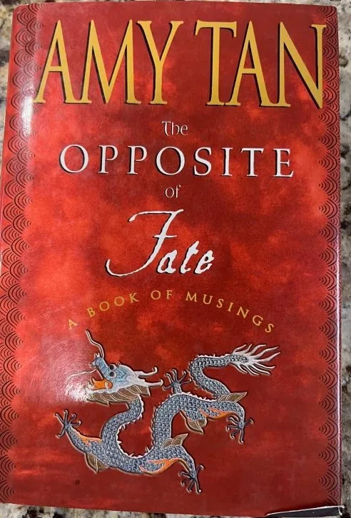

Nonfiction & How-To
Amy Tan - The Opposite of Fate: A Book of Musings - Hardcover
$6.00💳 Buy now with card
The bestselling author of The Joy Luck Club opens up about her own life in this warm, funny and moving collection of essays. Amy Tan reflects on her mother, her family's history, her writing, and the twists of luck, chance and fate that shaped them all.
Features & benefits
- Hardcover with dust jacket
- Personal essays and memoir from the author of The Joy Luck Club
- Touches on family, memory, writing and the meaning of fate
- A thoughtful gift for readers and aspiring writers
- Pre-owned: see photo for condition
- 🔒 Secure checkout
- 🚚 Ships from Denver, Colorado (USA)
- ↩️ 30-day returns
Questions? Call or text +1 720 799 4089 or email info@akiliwomarketplace.com